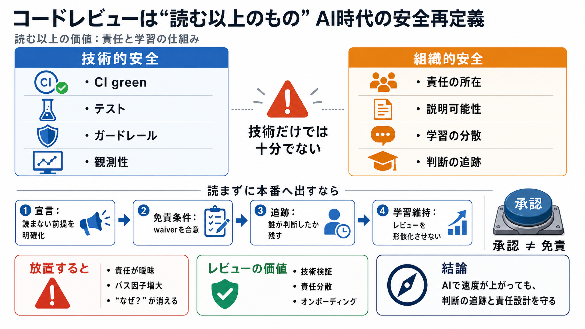

AI at Honeycomb: What's Actually Working (w/ CTO Charity Majors)
Charity Majors is the CTO of Honeycomb - an observability platform used by top engineering orgs like Dropbox and Interco…

Charity Majors is the CTO of Honeycomb - an observability platform used by top engineering orgs like Dropbox and Interco…
Charity Majors is Co-Founder and CTO of Honeycomb, which provides full-stack observability that enables engineers to dee…
Honeycomb was built for the AI era. Learn how to futureproof your software for what comes next. #### Why Honeycomb. Disc…
An interview with Charity Majors is the CEO and cofounder of Honeycomb, a tool for software engineers to explore their c…
Most notably at the mobile app development company Parse, where she was the first very first ops and infrastructure hire…